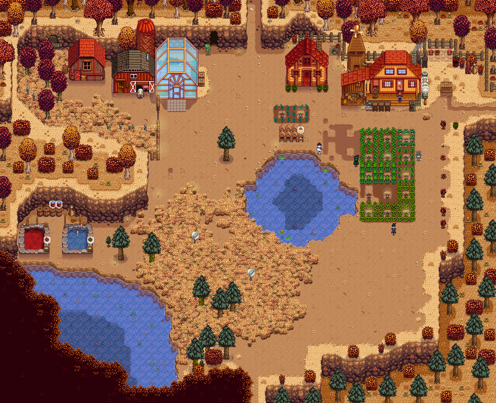
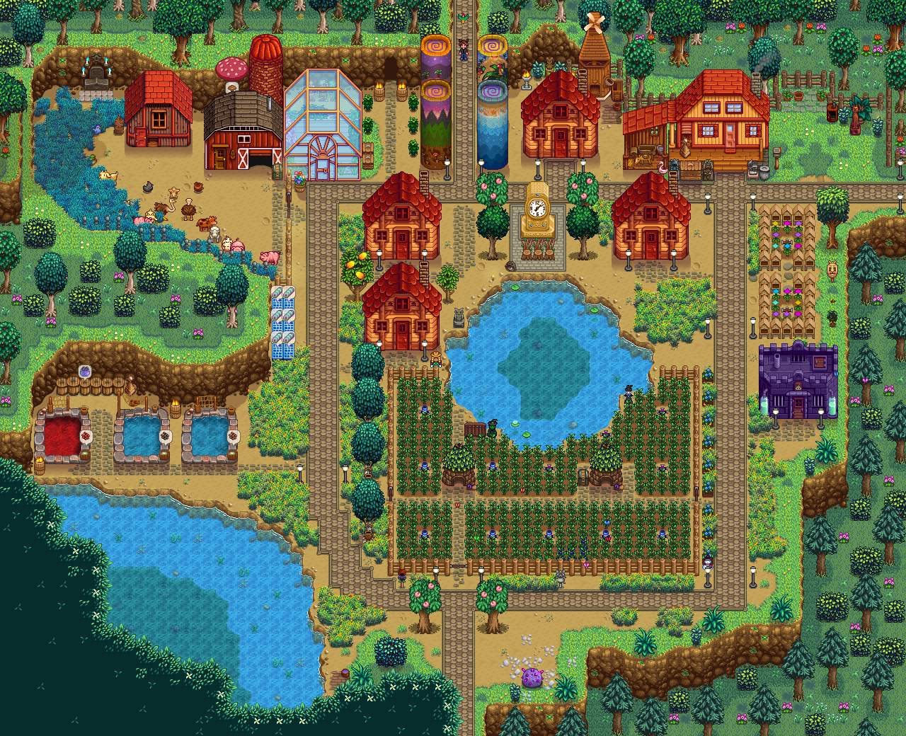

Stardew Valley
| Release Date: | February 26th, 2016 |
| Genre: | Farming Simulator |
| Developer: | ConcernedApe |
| Platform: | PC, Mac, Xbox One, Playstation 4, Nintendo Switch, and Mobile |
| Details: | Website |
Stardew Valley is an iconic framing simulator developed by ConcernedApe. This game has been around for quite some time, and some would say is what started the influx of farming simulator games. It has become the gold standard of how a modern farming simulator should feel. I would play the game off and on over the years, but with the recent 1.6 update, I’ve done quite a deep dive into the game, finally making it to the late-game content that I’ve never fully experienced in prior playthroughs.
There’s a reason why this game has remained popular over the years, and why so many other framing sims tried to replicate its success. The game has an incredible level of detail and polish put into it, where each feature of mechanic fits within the scope of the game’s vision.
Gameplay
Stardew Valley functions similarly to many other sandbox farming simulator games, where you’re given the freedom of what you’d like to do on any given day within the game. Whether that be working on your farm by growing seasonal crops and raising various farm animals, exploring the surrounding areas for resources, or interacting with the various NPCs within Pelican Town. It’s a very open-ended game, where there’s not really a linear path that you follow, but you progress in whatever area of the game you wish to partake in.
Regardless in what you decide to do, each one of these mechanics is fun to partake in and helps you improve life around the farm. Spent a day fishing? You can sell your fish to buy more things around town, or use the fish to craft better fertilizer for your farm, or put the fish in a fish pond to passively generate more resources, or use them to cook various foods to provide yourself with buffs. Spent a day mining? Now you’ve collected more resources to craft with, maybe found some ore to improve your tools, or found some gemstones for more cash or to gift to the villagers around town! There’s a fantastic balance between the different mechanics, that no matter what you partake in, you’re always progressing.
There’s a good variety of tasks that you can do, but there’s also a depth of progression that keeps you going for a long time. There’s various different “milestones” through the game that give you some long-term goals to work towards. The first one of these milestones presented to the player is the Community Center, which provides the player with Collections of items that they need to obtain. As they complete these collections, they’ll be rewarded with various different items and aspects of the town get repaired, unlocking more mechanics or quality-of-life aspects. Once the center is completed, you unlock the next milestone to strive for, giving you more features and abilities as you progress towards it. The long-term progression goals really help with the games longevity, locking content behind these milestones, so by the time you’ve experienced it all up to that point, you get a breath of fresh content to explore!
Story & Worldbuilding
There’s not much of a story to Stardew Valley as you progress through the game, but the game does a great job of setting up and connecting the world in which you’re within. As the farmer, you’ve moved to Stardew Valley to escape the soul-crushing work of JoJo, to find a more peaceful, fulfilling life. The farm is inherited by your late-grandfather, who passed the deed of the land to you, as he was in the same position as you.
As you spend time within Pelican Town and the surrounding areas, you get to learn a lot about the various villagers living there. As you get to know them, various cutscenes will trigger, giving you further insight on their character or about their relationship with others within the town. The characters are well written and feel “human”. Some characters have flaws or personalities that may get annoying, but that’s more enjoyable than every character being “perfect”.
Visuals & Audio
The spritework done throughout this game is fantastic. All the overworld sprites have a great deal of detail within them, so the player knows what they’re looking at without the need of additional UI to explain. For example, while crops are growing, they have many stages of growth that change their look, giving the player an idea how close the crop is towards being harvestable. The animations are very well done too, each fluid and realistic. There’s a wide variety of music within the game, and changes as the seasons go on throughout the game. The main tracks are really pleasing to listen to, and there’s tons of unique songs for specific festivals and cutscenes, that it really helps set the tone and immersion for whatever current activity is going on.
Overall Thoughts
Stardew Valley is probably one of the best farming simulator games on the market. The amount of love and passion put into the game is seen through the sheer amount of content that the game has to offer. It’s one of those games that you can sink hundreds of hours into and still not uncover all that the game has to offer. It respects your time in that you can play it for a single in-game day or for multiple seasons, feel like you’ve accomplished something towards your farm. It has replayability value as well with various different farm layouts to start with, different paths to accomplish the milestones, and multiplayer support!
This was the perfect cozy game for Valerie and I to play together while we were in a long-distance relationship, that despite being across the country from each other, we had a farm to spend time with each other on. It’s a fantastic, cozy game for anyone looking to escape reality for a while and enjoy your time in peaceful Stardew Valley.
My single player farm at the time of writing, Solo Farm. Currently on Fall 9th, Year 2.

Same single player farm, Solo Farm, upon achieving Perfection. Summer 23rd, Year 4.
